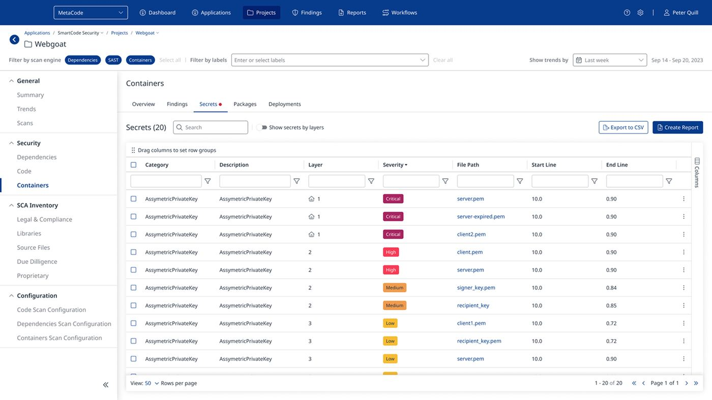
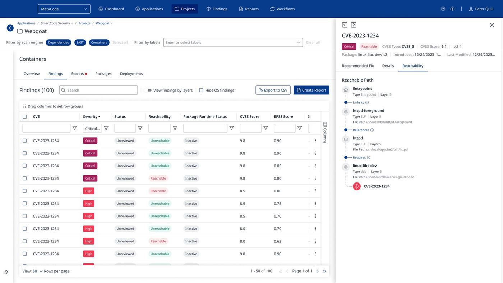
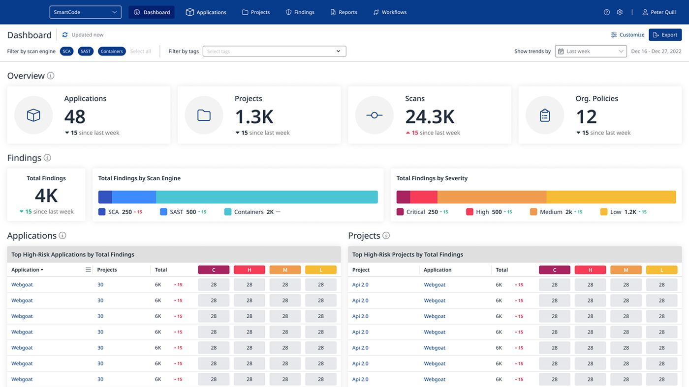

Context
Mend is an application security company. Its system scans code, open-source dependencies and containers for risk, and it had grown into several platforms, each with its own interface.
I worked with Mend for about four years, as a freelancer through Salant ID design studio, in a team that also included other UX and UI designers. The work started from an existing specification and grew into an ongoing role: a full redesign, a design system, and a steady flow of new features and pages.
One system for all the products
The first task was to bring the platforms together in one interface. I created visual concepts for the new system, with a color palette based on Mend’s logo, so the product and the brand would look like one company.
Once a concept was chosen, I designed the first screens and the foundations of the system, and built a design system alongside them. The new system went live, and from then on I designed new features and pages on the same foundations.

Details without losing the list
Security data is deep: every finding has a package, a score, a fix and a path through the code. I designed most of the side panels in the system, so a finding opens beside the table instead of on a new page. The user can read the details, including the reachable path from the entry point to the vulnerability, and move to the next finding without losing their place.

New features over the years
With the foundations in place, I specified and designed new features as the product grew. A few examples: screens and tables that show security risks in code written with AI, including classification tags and the prompts that led to each risk; an onboarding flow that helps paying customers use everything their subscription includes; and Mend’s widgets for development environments, so developers can see findings where they write code.
Rethinking the dashboard
I had designed the dashboard for the unified system to give product managers a clear overview. The brief for the redesign started from the fact that developers use it too: they find the information there, but have nowhere to act on it. The goal became a dashboard that answers “what do I do now”, not only “what is the status”: one click to a page that brings together the way to fix an issue, or a fix directly from the dashboard.

- Research, by hand and with AI
- I researched partly by hand and partly with Claude. Searching myself gave me a direct feel for what mattered; Claude helped me find studies, articles and competitor screens, and organize them into comparisons. AI was good for breadth, but deciding what was relevant to Mend’s users stayed with me.
- Three directions
- The directions differed in how they split and showed the information: a list, cards, or an infographic. They also differed in structure: one view that brings everything together with a filter for different states, or a repeating component that shows each state. I recommended a single infographic with a state switcher. I built the prototypes with AI tools: Claude for the base and the working components, ChatGPT for more options, motion and hover effects, and Figma’s agent for variations on specific components.
- Live prototypes, not static frames
- Each direction was a working coded prototype, with micro-interactions and motion. When a product manager can click and see how a card responds, the conversation about the concept becomes concrete. I handed the three directions over to Mend’s product team.
A reimagined concept
The directions I delivered to Mend are not shown here. This is a new concept with sample data, built on the same idea: lead the user from “what is the status” to “what do I do now”. Switch the view and the tabs, hover over a column, or open an application to reach its findings.
New concept · sample data
A design system for working with AI
Before my work with Mend ended, I started moving the design system to Variables, structured to work with Claude. I built the foundations, explored how the system should be set up, and tested it with the developers. The team completed the move after I finished.
Outcome
The unified system went live, and I kept designing it for about four years.
- One live systemAll of Mend’s platforms in one interface, with a visual language based on the brand.
- About four years of new featuresSpecified and designed on the same foundations and design system.
- Three dashboard directionsHanded over as working coded prototypes.
- A Variables-based design systemI built its foundations; the team completed it.